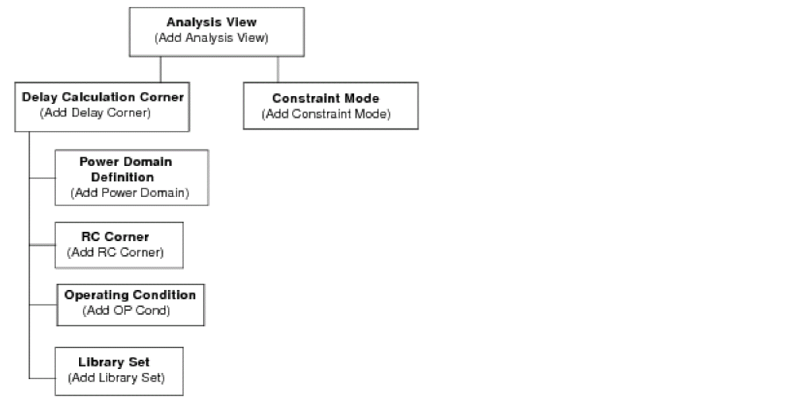

MMMC Browser
Use the MMMC Browser to hierarchically create the view configurations necessary for multi-mode multi-corner analysis. Each top-level set of information is called an analysis view, and is composed of a delay calculation corner and a constraint mode. The active analysis views defined in the software represent the different design variations that will be analyzed.
Hierarchical Analysis View Configuration

You can access the following forms from the MMMC Browser by double clicking on the generic object or analysis view name:
- Add Library Set
- Add OP Cond
- Add RC Corner
- Add Constraint Mode
- Add Delay Corner
- Add Power Domain
- Add Analysis View
- Add Hold Analysis View
- Add Setup Analysis View
You also can access the following editing forms from the MMMC Browser by double clicking on a specific object name:
- Edit Library Set
- Edit OP Cond
- Edit RC Corner
- Edit Constraint Mode
- Edit Delay Corner
- Edit Power Domain
- Edit Analysis View
Additionally, you can access the following form to change how the configuration is displayed in the MMMC Browser:
Return to top